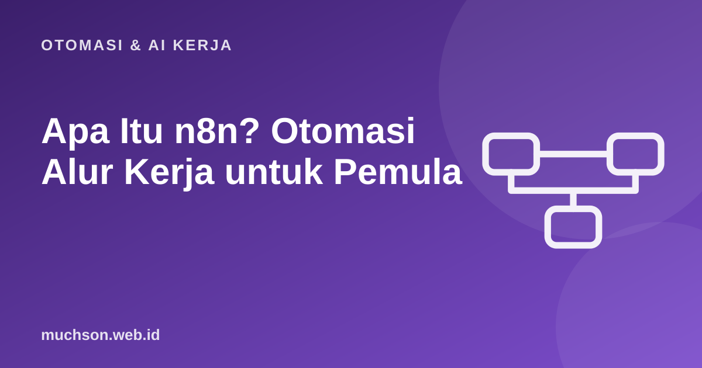

Beranda › Artikel › Otomasi & AI Kerja
Otomasi & AI KerjaApa Itu n8n? Otomasi Alur Kerja untuk Pemula
Banyak pekerjaan kantor berupa pemindahan data yang membosankan: menyalin pesanan dari formulir ke spreadsheet, mengirim pengingat, merangkum surel. n8n (dibaca "en-eight-en") memungkinkan Anda menyambungkan aplikasi dan membuat alur kerja otomatis lewat kanvas visual, dengan opsi menulis kode saat perlu. Artikel ini menjelaskan konsep dasarnya.
Sebaiknya sudah paham: tidak ada; cukup terbiasa memakai aplikasi web

Setelah membaca dan mencoba materi ini, Anda mampu:
- menjelaskan apa itu n8n dan masalah yang diselesaikannya
- memahami trigger, node, koneksi, dan item data
- membedakan n8n dengan Zapier dan Make
- memahami cara kerja alur kerja dari trigger hingga hasil
- mengenali tugas yang cocok dan tidak cocok diotomasi
n8n adalah alat visual; alur kerjanya dibuat di editor n8n, bukan di halaman ini. Contoh kode JavaScript di bawah meniru logika node Code dan dijalankan sungguhan dengan Node.js agar hasilnya dapat dibuktikan. Antarmuka dan nama node dapat berubah antar versi, jadi cocokkan dengan dokumentasi n8n.
Apa itu n8n
n8n adalah platform otomasi alur kerja dengan pendekatan fair-code: kode sumbernya terbuka untuk dibaca dan dapat dijalankan sendiri (self-host), dengan lisensi yang membatasi sebagian penggunaan komersial tertentu. Anda dapat memakainya lewat layanan awan n8n atau memasangnya di server sendiri. Setiap alur kerja (workflow) tersusun dari node yang saling terhubung.
Konsep inti
| Konsep | Arti | Contoh |
|---|---|---|
| Workflow | Satu alur otomasi lengkap | Pesanan masuk → catat → beri tahu |
| Trigger | Pemicu yang memulai alur | Webhook, jadwal (cron), surel baru, baris baru di sheet |
| Node | Satu langkah/aplikasi | Google Sheets, HTTP Request, IF, Code, WhatsApp |
| Koneksi | Garis yang meneruskan data antar node | Keluaran satu node menjadi masukan berikutnya |
| Item | Satu unit data (objek JSON) yang mengalir | Satu pesanan = satu item; 10 pesanan = 10 item |
| Credential | Kunci/akses ke layanan, disimpan terenkripsi | Token Google, API key |
| Execution | Satu kali alur berjalan, lengkap dengan log | Bisa dilihat berhasil/gagal dan datanya |
Data mengalir sebagai item
Hal yang paling membantu memahami n8n: setiap node menerima daftar item, bekerja pada tiap item, lalu mengirim daftar item baru. Berikut peragaan logika itu dengan JavaScript, persis seperti isi node Code yang mengubah data pesanan ($input.all() mengembalikan item, tiap item punya properti json).
// Peragaan: node Code menerima item dan mengembalikan item baru
const masukan = [
{ json: { nama: 'Ani', produk: 'Kopi', jumlah: 2, harga: 20000, ponsel: '0812-3456-7890' } },
{ json: { nama: 'Budi', produk: 'Teh', jumlah: 1, harga: 15000, ponsel: '12345' } },
{ json: { nama: 'Citra', produk: 'Kopi', jumlah: 3, harga: 20000, ponsel: '+62 813 9999 0000' } },
];
const keluaran = masukan.map(({ json }) => ({
json: {
...json,
total: json.jumlah * json.harga,
ponselBersih: json.ponsel.replace(/[^\d+]/g, '').replace(/^\+?62/, '0'),
},
}));
// node IF: pisahkan ponsel valid dan tidak valid
const valid = keluaran.filter(i => /^08\d{8,11}$/.test(i.json.ponselBersih));
const tidak = keluaran.filter(i => !/^08\d{8,11}$/.test(i.json.ponselBersih));
console.log('cabang BENAR (dikirim ke Sheets/WhatsApp):');
valid.forEach(i => console.log(' ', i.json.nama, i.json.total, i.json.ponselBersih));
console.log('cabang SALAH (dicatat untuk ditinjau):');
tidak.forEach(i => console.log(' ', i.json.nama, 'ponsel:', i.json.ponsel));cabang BENAR (dikirim ke Sheets/WhatsApp):
Ani 40000 081234567890
Citra 60000 081399990000
cabang SALAH (dicatat untuk ditinjau):
Budi ponsel: 12345n8n, Zapier, dan Make
| Aspek | n8n | Zapier | Make |
|---|---|---|---|
| Model | Self-host atau awan; fair-code | Layanan awan | Layanan awan |
| Antarmuka | Kanvas node, bisa kode (JS/Python) | Daftar langkah linier, sederhana | Kanvas visual dengan modul |
| Fleksibilitas | Tinggi: percabangan, loop, kode, HTTP bebas | Sedang; paling mudah dimulai | Tinggi untuk alur visual kompleks |
| Kontrol data | Dapat di server sendiri | Data lewat layanan mereka | Data lewat layanan mereka |
| Biaya | Self-host tanpa biaya lisensi dasar (bayar server); awan berbayar | Per tugas; bisa mahal saat volume naik | Per operasi; menengah |
| Kurva belajar | Menengah | Rendah | Menengah |
Tidak ada yang selalu terbaik. Zapier cocok untuk otomasi cepat tanpa kerepotan teknis; n8n unggul bila Anda butuh kontrol, volume besar, atau data yang harus tetap di server Anda. Harga dan fitur berubah; periksa halaman resmi masing-masing sebelum memutuskan.
Apa yang cocok diotomasi
- Cocok: tugas berulang dengan aturan jelas, bervolume, dan lintas aplikasi: pencatatan pesanan, notifikasi, laporan berkala, sinkronisasi data, pembersihan data.
- Hati-hati: keputusan yang butuh penilaian manusia (tinjau dulu sebelum kirim), tindakan tak dapat dibatalkan (hapus, bayar), dan proses yang belum Anda pahami (otomasi proses buruk hanya mempercepat kekacauan).
- Aturan praktis: lakukan manual sampai paham, tulis langkahnya, baru otomasi; selalu sediakan penanganan galat dan pemberitahuan kegagalan.
1. Sebutkan tiga pemicu (trigger) yang umum.
2. Mengapa penting ada cabang untuk data tidak valid?
3. Kapan memilih Zapier daripada n8n?
4. Proses apa yang sebaiknya tidak diotomasi penuh?
- n8n merangkai aplikasi lewat workflow: trigger → node → hasil.
- Data mengalir sebagai item JSON; node bekerja per item.
- Self-host memberi kontrol data; Zapier/Make lebih mudah dimulai.
- Otomasi proses yang sudah dipahami, dengan penanganan galat dan persetujuan manusia untuk tindakan berisiko.